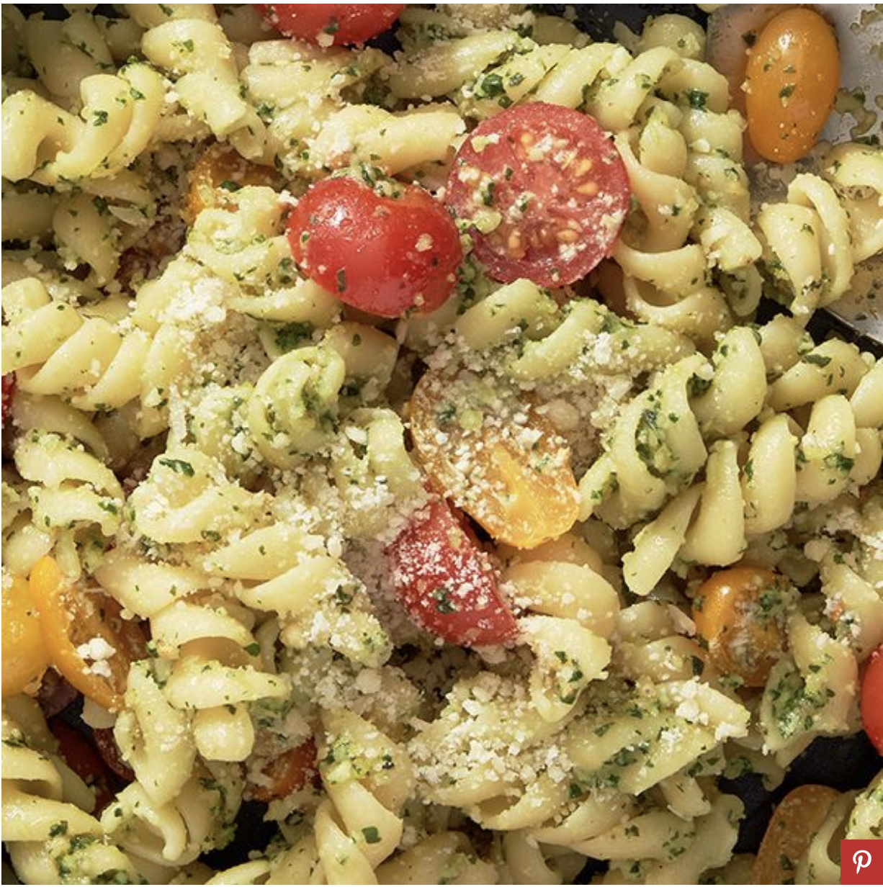

Pesto Pasta Salad

The star of this pasta salad is the fresh, homemade pesto. All you’ll need
is pine nuts, garlic, basil, a good quality olive oil, a generous helping
of Parmesan, and lemon juice. We recommend using your nicest olive oil
recipe. The flavor will really shine through, so it makes a difference to
use the higher quality stuff in this recipe—trust us.
Ingrediants
- 1 lb. short pasta, such as fusilli or penne
- 1/4 c. pine nuts
- 3 cloves garlic, minced
- 1 c. basil leaves
- 1/4 c. finely grated Parmesan, plus more for serving
- 1/4 c. extra-virgin olive oil
- 2 tsp. lemon juice
- 1 tsp. kosher salt
- 1 pt. grape or cherry tomatoes, halved lengthwise
Directions
-
Bring a large pot of salted water to a boil and cook pasta until al
dente. Reserve ¼ cup pasta water, then drain pasta in a colander. Rinse
and transfer pasta to a large bowl to cool.
-
Meanwhile, in a small skillet over medium-low heat, cook pine nuts until
just beginning to brown, 6 to 8 minutes. Add garlic and cook until
softened and fragrant, about 1 minute. Let cool.
-
In the bowl of a food processor, combine pine nut-garlic mixture, basil,
Parmesan, oil, lemon juice, and salt. Pulse five or six times until
mostly smooth. Add reserved pasta water, 1 tablespoon at a time, and
pulse to reach desired texture.
-
Add pesto and cherry tomatoes to the pasta and toss to combine. Serve
topped with additional Parmesan.